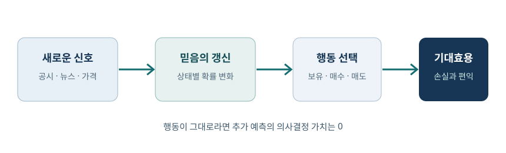

값싼 예측과 AI의 경제학
인공지능을 금융에 적용한다는 말은 먼저 어떤 정보를 얻어 어떤 선택을 바꾸는가를 묻는 일이다. 예측의 값은 정확도 자체가 아니라 그 예측으로 피할 손실과 새로 얻을 편익에 있다. 이 장은 예측의 경제학에서 과업의 보완관계, 가격 조정, 자산가격 예측으로 이어진다. 수학에서 필요한 것은 조건부기대값, 탄력성, 회귀의 기초이며, 각각을 아래에서 다시 정의한다.
강좌의 지도
금융에서 AI는 공시 읽기, 신용심사, 거래, 위험관리처럼 성격이 다른 일을 한다. 이들을 묶는 질문은 미래의 불확실한 상태를 더 잘 추정하면 현재의 행동이 어떻게 달라지는가다. 예를 들어 다음 분기 매출을 맞혀도 매수·매도 기준이나 거래비용을 정하지 않으면 투자전략은 완성되지 않는다.
이 장의 순서는 예측의 가치 → 업무 병목 → 가격과 고용의 변화 → 실제 수익률 예측의 검증이다. 뒤의 정규화 회귀와 요인 논쟁은 앞의 경제학적 질문에 대한 통계적 도구로 읽으면 연결된다.
핵심 구분은 예측값·결정 규칙·성과 측정이다. 예측값이 다음 달 수익률 8%라고 해도 보유 현금, 위험한도, 대안 자산의 기대수익률에 따라 주문량은 달라진다. 따라서 뒤의 모든 사례에서 입력 시점, 출력값, 행동, 비교 대상의 네 칸을 직접 채워 보면 서로 다른 AI 활용을 같은 틀로 읽을 수 있다.
왜 금융에서 AI를 배우는가
금융의 입력은 공시, 뉴스, 가격, 재무제표처럼 풍부하지만 목표인 미래 초과수익률은 매우 시끄럽다. 같은 기술이라도 영수증 분류에서는 높은 정확도가 곧 생산성으로 이어질 수 있지만, 투자에서는 작은 예측 오차가 큰 손실로 번진다.
따라서 이 분야는 AI의 장점을 가장 필요로 하면서도 검증 기준이 특히 엄격하다. 독자는 매번 데이터가 언제 알려졌는지, 선택 가능한 행동이 무엇인지, 성과의 비교 대상이 무엇인지 묻는 습관을 갖추어야 한다.
금융 수익률은 기업 실적뿐 아니라 금리, 유동성, 투자자 기대가 동시에 움직인 결과다. 예측 모형이 기업의 실적을 잘 맞혀도 시장이 이미 그 정보를 가격에 넣었다면 투자수익은 늘지 않는다. 실적 예측 오차와 가격 대비 초과수익 예측 오차를 별도로 기록해야 하는 이유가 여기에 있다.
주식 매수 질문에 빠진 변수들
“삼성전자를 지금 사도 되는가”라는 질문은 답을 하나로 정할 수 없다. 투자 기간, 이미 가진 종목, 손실 감내 범위, 세금과 수수료가 빠졌기 때문이다. 같은 전망을 가진 두 사람도 현재 포트폴리오가 다르면 최적 행동이 다르다.
판단의 기본형은 상태 \(s\)가 일어날 확률 \(p(s)\)와 행동 \(a\)의 효용 \(U(a,s)\)를 놓고 \(a^*=\arg\max_a\sum_s p(s)U(a,s)\)를 선택하는 것이다. AI는 주로 \(p(s)\)를 바꾸지만, 목표와 제약을 정하는 일은 별개다. 자동 주문 권한까지 연결된다면 잘못된 예측의 비용과 사전 통제가 훨씬 중요해진다.
두 투자자에게 동일한 상승 확률 60%를 제시해 보자. 한 명은 이미 반도체 주식을 많이 보유하고 다른 한 명은 현금만 있다면, 전자는 집중위험 때문에 추가 매수를 피할 수 있다. 신호의 품질을 평가할 때도 단순 정답률보다 실제 효용 변화나 위험 조정 수익을 비교해야 한다.
AI 충격과 한국 주식시장의 집중
한국 주가지수는 시가총액 가중이므로 소수 반도체 대형주의 변동이 지수 전체에 크게 반영된다. 미국의 장기금리 상승은 먼 미래의 이익을 현재가치로 환산하는 할인율을 높이고, AI 투자 수익성에 대한 의문은 예상 현금흐름을 낮출 수 있다. 두 힘이 동시에 작용하면 관련 기업의 가격은 더 민감하게 움직인다.
AI 기업 사이의 투자·클라우드 구매·반도체 공급 계약은 서로의 매출을 키우지만 현금흐름의 독립성을 보장하지 않는다. 한 고리의 투자 축소가 다른 고리의 매출 전망을 낮추는 공통 위험이 될 수 있다. 단순한 “AI 수혜주” 분류보다 자금의 출처와 최종 고객 수요를 추적해야 한다.
시가총액 가중지수에서 기업 \(i\)의 단순 기여는 대략 지수 내 비중 \(w_i\)와 그 기업 수익률 \(r_i\)의 곱 \(w_ir_i\)다. 비중이 큰 기업의 작은 하락도 여러 소형주의 상승을 덮을 수 있다. 이때 지수 하락을 곧바로 '모든 산업의 AI 전망 악화'로 읽지 말고, 기업별 기여도와 공통 금리 충격을 분리하자.
값싼 예측의 경제학
예측은 아직 관찰하지 못한 값을 현재 정보로 추정하는 것이다. 비용이 내려가면 기업은 예전에는 예측 문제로 보지 않았던 업무까지 예측 가능한 조각으로 분해한다. 대출 심사에서는 “상환할까”뿐 아니라 “어떤 추가 서류가 판정을 바꿀까”도 예측 대상이 된다.
가격이 떨어진 재화의 사용량이 늘고, 함께 쓰는 보완재의 가치가 바뀐다는 미시경제학을 그대로 적용할 수 있다. 데이터 품질, 손실함수의 설계, 행동할 권한이 대표적인 보완재다. Prediction Machines의 관점은 AI를 만능 지능으로 부르기보다 어떤 투입의 가격이 내려갔는지 묻게 한다.
대출 승인 사례를 생각하면, 예측 대상은 '연체 여부'지만 결정 대상은 승인·거절·금리·한도다. 연체확률 5%와 6%의 차이가 승인 기준을 넘지 않으면 더 정밀한 예측의 한계가치는 작다. 반대로 기준 근처의 신청자가 많다면 작은 확률 개선도 손실과 금융 접근성을 크게 바꿀 수 있다.
세 명제의 연결
첫째, 예측은 결정을 바꾸어야 가치가 있다. 둘째, 그 결정이 실제 결과로 이어지려면 업무의 다른 단계가 따라와야 한다. 셋째, 예측 비용이 충분히 내려가면 고객의 수요와 관련 노동·데이터의 가격이 조정된다.
세 명제는 개인의 선택, 기업의 생산과정, 시장 균형이라는 서로 다른 분석 수준이다. 한 수준에서 관찰한 성능을 다른 수준의 성과로 곧장 옮기면 논리적 도약이 생긴다. 가령 문서 요약 속도가 10배여도 승인위원회의 처리량이 그대로라면 기업의 총 처리량은 거의 안 바뀔 수 있다.
세 수준을 연결하는 간단한 장부를 만들 수 있다. 개인 수준에서 한 건당 절감액이 \(v\), 기업이 처리하는 건수가 \(q\)라면 직접 편익은 \(vq\)다. 그러나 도입 비용과 검토 인력이 필요하고, 시장에 서비스가 늘면 가격과 \(q\) 자체가 바뀐다. 한 건의 실험 효과를 전체 산업의 편익으로 곱할 때 이 변화를 빠뜨리지 않아야 한다.
의사결정을 바꾸지 않는 신호의 가치는 0
신호 \(z\)를 보기 전 최적 기대효용은 \(V_0=\max_a E[U(a,s)]\)다. 신호를 본 뒤에는 신호마다 행동을 다시 고를 수 있으므로 \(V_1=E_z[\max_a E[U(a,s)\mid z]]\)다. 기존 행동을 계속 고르는 선택도 가능하므로 \(V_1\ge V_0\)이고, 정보의 가치는 \(V_1-V_0\)이다.
두 신호의 정답률이 달라도 최적 행동이 늘 같다면 행동 가치의 차이는 없다. 예컨대 투자 허용 범위가 너무 좁아 어떤 신호에도 같은 보유량을 유지한다면 더 정밀한 수익률 전망의 즉각적 가치는 0이다. 반대로 드문 파산을 맞히는 신호는 전체 정확도가 낮아도 큰 손실을 피하게 해 가치가 클 수 있다. 이는 Blackwell의 정보 비교를 금융 의사결정에 적용한 것이다.
왜 \(V_1\ge V_0\)인가? 신호를 본 뒤에도 항상 신호를 무시하고 기존 최적 행동을 택할 수 있기 때문이다. 선택지가 늘었는데 최대 기대효용이 낮아질 수는 없다. 다만 신호 구매료 \(c\)를 지불한다면 순가치는 \(V_1-V_0-c\)이며, 양의 정보가치가 곧 유료 서비스 구매를 정당화하지는 않는다.

지도와 압축
추상화는 정보를 버리는 일이다. 피카소의 황소 그림은 세부 묘사를 지우면서도 황소를 알아볼 특징을 남긴다. 지하철 노선도는 실제 거리와 방향을 왜곡해 환승 경로를 읽기 쉽게 한다.
좋은 압축의 기준은 원본을 얼마나 완벽히 재현하는지가 아니라 목표 결정에 필요한 차이를 보존하는가다. 지하철 지도는 환승에는 유용하지만 도보 시간에는 부정확할 수 있다. 금융 모형도 종목의 모든 정보를 저장할 필요는 없지만, 손익을 좌우하는 꼬리위험이나 발표 시점을 버려서는 안 된다.
통계적으로는 압축된 표현 \(z\)가 목표 \(y\)에 대해 충분한 정보를 남겼는지를 묻는다. 같은 요약문을 갖는 두 공시가 실제로는 서로 다른 현금흐름을 암시한다면 요약은 해당 투자 결정에 불충분하다. 반대로 소송 문구의 표현 차이가 손익 판단을 바꾸지 않는다면 그 세부는 버려도 된다.
한 결정에 맞춰 만든 지도
현실 \(x\)를 표현 \(z=f(x)\)로 압축한 다음 예측 \(\hat y=g(z)\)를 만들고 행동 \(a=h(\hat y)\)을 고른다고 하자. \(f\)는 두 현실을 같게 보이게 할 수 있다. 두 현실에서 최적 행동이 같다면 그 손실은 작지만, 하나는 매수하고 다른 하나는 매도해야 한다면 치명적이다.
거대언어모형은 학습자료의 패턴을 압축해 답을 생성한다. 금융에서는 문장 요약의 매끄러움보다 의사결정에 필요한 수치, 부정문, 예외 조항, 기준일을 유지하는지가 중요하다. 공시의 “일회성 이익” 한 단어가 사라지면 이익의 지속성 평가가 달라진다.
실무에서는 '문서를 잘 요약했는가' 대신 '최종 판단에 필요한 필드가 남았는가'를 점검할 수 있다. 예컨대 계약금액, 종료일, 해지 조건, 연결대상 여부를 표로 추출하고 원문 위치를 붙인다. 이 절차는 생성된 한 문장의 자연스러움과 원문 충실도를 분리해 평가하게 한다.
공시에서 글자가 이미지일 때
문자 검색은 텍스트 층에 존재하는 글자를 찾는다. 실적 발표의 핵심 문단이 그림으로 삽입되면 사람이 보기에는 같은 문장이지만 기계의 단순 검색에서는 사라질 수 있다. 멀티모달 인식은 이미지의 글자를 읽어 이런 누락을 줄인다.
그러나 읽기와 평가를 구분해야 한다. 자산 매각 이익을 정확히 추출했더라도 그 이익이 반복 가능한 영업이익인지, 현금 유입인지, 주가에 이미 반영됐는지는 추가 판단이 필요하다. 실무적으로는 이미지 OCR 결과를 원문 페이지와 대조하고, 추출된 숫자의 단위와 회계 기간을 검증한다.
OCR 결과의 숫자 '1,000'은 원 단위인지 백만 원 단위인지에 따라 천 배 차이가 난다. 표 제목, 주석, 괄호로 표시한 음수, 전년 대비 열을 함께 읽어야 한다. 이미지에서 텍스트를 찾은 다음에는 추출된 값마다 페이지 번호와 주변 문맥을 남겨 사람이나 별도 규칙이 확인할 수 있게 한다.
빠른 요약과 정확한 요약의 선택
분석가가 3일 걸려 오류율 1%인 결과를 내고 AI가 10초 걸려 오류율 5%인 결과를 낸다고 하자. “어느 쪽이 좋은가”는 오류 하나의 비용, 마감 시각, 사람이 후속 검토할 수 있는지에 달려 있다. 단순히 속도나 정확도 한 숫자로 고르지 않는다.
오류의 평균 비용을 \(L\), 지연 비용을 \(D\)라 하면 총 기대비용의 단순형은 \(C=p_{\mathrm{err}}L+D\)다. 중요한 공시를 잘못 읽어 큰 주문을 넣는 경우에는 \(L\)이 커서 검토 단계가 가치 있다. 반면 수천 개 문서에서 검토 후보만 찾는 1차 선별에는 빠른 도구가 유리할 수 있다.
검토자의 시간을 어디에 배치할지도 최적화 문제다. 오류 가능성이 높은 문서와 오류 비용이 큰 주문에 우선 사람의 확인을 붙이면, 모든 결과를 재검토하는 것보다 같은 시간에 기대손실을 더 줄일 수 있다. 이는 모형의 확률 보정이 중요한 이유이기도 하다. '95% 확신'을 붙인 사례에서 실제 오류율이 5%인지 확인해야 한다.
암달의 법칙과 업무 병목
전체 처리시간을 1로 정규화하고, 자동화 가능한 부분이 \(p\), 그 부분의 속도가 \(s\)배가 된다고 하자. 새 시간은 자동화하지 못한 \(1-p\)와 빨라진 \(p/s\)의 합이다. 따라서 전체 속도 증가는 다음과 같다.
문서 초안이 업무시간의 10%라면 이를 10배 빠르게 해도 \(S=1/(0.9+0.01)\approx1.099\), 즉 전체 처리량 증가는 약 9.9%다. 준법 검토와 최종 승인에 긴 시간이 걸리면 초안 작성의 혁신이 곧바로 전체 혁신이 되지 않는다. \(s\to\infty\)일 때조차 상한은 \(1/(1-p)\)다.
식의 분모를 직접 대입해 보자. 원래 100시간 중 30시간이 자동화 대상이고 이를 5배 빠르게 하면 새 총시간은 \(70+30/5=76\)시간, 속도는 \(100/76\approx1.32\)배다. '대상 과업이 5배 빨라졌다'와 '전체가 5배 빨라졌다'는 전혀 다르다. 새 병목인 70시간을 줄여야 다음 개선이 커진다.
영상의학 사례가 알려 주는 것
영상 판독 성능이 높아졌다는 사실만으로 의사의 고용이 사라진다고 예측할 수 없다. 직업은 판독, 환자와의 소통, 다른 전문의와의 협업, 시술, 법적 책임의 묶음이다. AI가 한 과업을 싸게 만들면 전체 검사량이 늘고 남은 과업의 수요가 커질 수 있다.
다만 다른 시기나 국가의 보수·고용 변화를 AI 하나의 인과효과로 읽을 수는 없다. 인구 고령화, 의료 수가, 양성 정원, 규제도 움직인다. 이 사례의 교훈은 “자동화 가능한 과업의 비중”과 “검사 수요의 탄력성”을 함께 살피라는 것이다.
직업을 과업 묶음으로 보면 자동화의 직접효과와 수요 확대의 간접효과가 보인다. 검사 한 건의 비용이 하락해 검사량이 증가하면 판독 외 상담·설명·후속 치료의 총량이 늘 수 있다. 최종 고용 방향은 한 건당 인력 절감률과 검사량 증가율을 비교해야 판단할 수 있다.
암달 곡선의 평탄해짐
\(p=0.5\)이면 자동화 부분을 무한히 빠르게 해도 전체는 최대 2배다. \(p=0.9\)라면 상한은 10배다. 속도 증가의 한계효과는 \(s\)가 커질수록 작아진다. 분모의 \(p/s\)가 이미 작아진 뒤에는 다른 단계가 시간을 지배하기 때문이다.
실무 결정은 가장 느린 도구를 무조건 개선하는 것이 아니다. 전체 시간에서 해당 단계가 차지하는 비중을 측정하고, 개선 후 새 병목이 어디로 이동하는지 계산한다. 거래 시스템에서 뉴스 분류를 빨리 해도 주문 한도 승인이나 결제 통제가 그대로면 총 처리량은 제한된다.
\(S(s)=1/(1-p+p/s)\)를 \(s\)로 미분하면 \(dS/ds=(p/s^2)/(1-p+p/s)^2>0\)이다. 속도를 높이면 전체 성능은 개선되지만 \(s\)가 커질수록 분자의 \(1/s^2\) 때문에 추가 개선은 작아진다. 이는 '더 큰 모형'에 투자할지 남아 있는 검토·집행 단계에 투자할지 고르는 기준이 된다.
과업 생산성과 총량 효과의 차이
고객상담, 글쓰기, 소프트웨어 개발 같은 개별 과업에서 AI가 시간을 줄인다는 실험은 중요하다. 그러나 임금·고용·GDP는 기업의 도입률, 품질 검토, 수요 증가, 가격 하락, 다른 과업으로의 재배치가 합쳐진 균형 결과다. 개별 과업의 처리속도 증가를 총량 생산성 증가와 동일시할 수 없다.
측정에도 시차가 있다. 초기에는 설치·학습·프로세스 재설계 비용이 들고, 나중에야 보완투자가 이루어진다. 반대로 총량 지표에 변화가 아직 작다고 해서 미시적 편익이 없다는 뜻도 아니다. 생성형 AI와 상담 생산성 연구는 과업 수준의 비교에 유용하다.
과업 실험의 효과를 총량으로 옮기려면 적어도 세 비율이 필요하다. 해당 과업이 전체 근로시간에서 차지하는 비중, 그 기술을 실제로 도입한 기업의 비중, 절감된 시간이 산출 증가로 바뀌는 비율이다. 세 비율 중 하나가 작으면 인상적인 실험 결과와 완만한 GDP 통계가 동시에 성립한다.
싸진 예측이 재평가하는 것
예측 서비스의 한계비용이 내려가면 가격도 경쟁을 통해 내려갈 수 있다. 고객은 같은 예산으로 더 많은 예측을 이용하고, 예측과 함께 쓰는 희소한 데이터·판단·집행 권한의 가치는 오를 수 있다. 다만 누구에게 이득이 귀속되는지는 수요와 공급의 탄력성에 달려 있다.
노동은 한 덩어리가 아니다. 자동화된 과업을 많이 수행하는 노동과 예측을 해석·책임지는 노동은 보완 또는 대체 관계가 다르다. 따라서 “AI가 임금을 올린다/내린다”보다 어떤 과업의 수요가 늘고 공급이 얼마나 빨리 따라오는지 묻는 편이 정확하다.
보완재의 가격 상승은 자동으로 보장되지 않는다. 기업이 고유 데이터를 독점하고 다른 기업이 모방하기 어렵다면 데이터 보유자가 잉여를 얻을 수 있다. 반면 고객 정보가 표준화되고 쉽게 이동하면 경쟁이 그 편익을 소비자에게 넘길 수 있다. 따라서 'AI와 함께 쓰인다'는 사실 외에 희소성과 대체 가능성을 함께 따져야 한다.
제번스 역설의 그림
에너지 효율이 개선되면 같은 이동 거리의 연료비가 내려간다. 비용이 낮아져 주행거리가 늘 수 있으므로 차량 한 대의 효율과 사회 전체의 연료 사용량은 반대 방향으로 움직일 수 있다. 그림의 혼잡한 도로는 단위당 투입 감소와 총투입 증가가 양립하는 경우를 보여 준다.
AI에도 같은 질문을 던진다. 공시 분석 한 건의 비용이 1/10이 되어 분석 건수가 20배가 되면 총 분석 투입은 오히려 2배다. 하지만 이런 반등은 필연이 아니다. 예측 수요가 포화되어 있거나 규제상 주문 횟수를 늘릴 수 없다면 총사용량이 줄 수도 있다.
반등의 크기를 숫자로 분리해 보자. 분석 한 건에 10분이 들던 것이 2분으로 줄고 건수가 3배가 되면 총 분석시간은 원래의 \(3\times2/10=0.6\)배다. 건수가 8배라면 1.6배다. 같은 효율 혁신이 총자원 감소와 증가를 모두 낳을 수 있으며, 차이는 수요 반응에 있다.
탄력성으로 보는 반등
단위 서비스 비용이 효율 개선으로 \(d\ln P<0\)만큼 낮아졌다고 하자. 수요의 가격탄력성을 \(\varepsilon=-d\ln Q/d\ln P>0\)로 정의하면 서비스 사용량은 \(d\ln Q=-\varepsilon d\ln P\)만큼 늘어난다. 한 서비스에 필요한 자원이 가격 하락률만큼 줄어든다면 총자원 \(E\)의 변화는 \(d\ln E\approx(1-\varepsilon)d\ln P\)다.
\(\varepsilon>1\)이면 \(d\ln P<0\)에 대해 \(d\ln E>0\)가 되어 반등이 효율 절감을 넘어선다. 의료영상 검사가 저렴해지면 검사 대상을 넓힐 수 있지만, 보험 규칙과 진료 지침이 수요를 제한할 수도 있다. 탄력성은 사례마다 추정해야 한다.
정확한 해석에는 단위비용 하락이 단위 자원투입 감소와 같은 비율이라는 가정이 숨어 있다. 서버 전력 외에 검토 인력, 저장비용, 고객 탐색비용이 함께 변하면 식도 달라진다. 또한 수요의 가격탄력성은 가격 변화의 크기와 사용량 범위에 따라 달라질 수 있으므로 작은 변화의 미분식을 큰 시장 충격에 그대로 적용하지 않는다.
기술과 직업의 역사
증기기관, ATM, 스프레드시트는 모두 한 과업의 비용을 낮췄다. 은행 창구에서는 현금 인출 업무가 줄어도 지점 운영과 고객 상담의 상대적 중요성이 커질 수 있었다. 회계에서는 계산 자동화와 함께 감사·해석 업무가 늘었다.
같은 역사로 모든 직업의 미래를 단정하면 안 된다. 기술 도입 시기에는 지점 수, 규제, 소득 증가가 함께 움직인다. 비교할 것은 직업명보다 과업의 구성, 서비스 수요의 가격탄력성, 남은 과업에 대한 진입 장벽이다.
ATM 예시에서 중요한 것은 창구 직원이라는 직업명보다 업무 구성이 변했다는 점이다. 현금 지급이 자동화되면 상담·상품 판매·예외 처리의 비중이 커질 수 있다. 그러나 디지털 금융으로 지점 자체가 줄어드는 별도 변화까지 합치면 고용 방향은 다시 달라진다. 역사적 유추에는 어떤 기술 충격을 비교하는지 명시해야 한다.
약한 고리와 GDP
경제 전체의 산출을 서로 보완적인 여러 부문의 함수로 보면 작은 부문의 생산성을 무한히 높여도 전체 산출은 다른 부문에 묶인다. 암달의 법칙이 시간의 합으로 이를 보여 준다면, 보완적인 생산함수는 가치의 합과 대체 가능성까지 고려한다.
대체탄력성 \(\sigma<1\)은 한 부문의 산출을 다른 부문의 산출로 바꾸기 어렵다는 뜻이다. 법률 검토가 빨라져도 법원 절차가 일정하면 전체 사건 처리량의 증가는 작다. GDP 효과를 추정할 때는 자동화 대상의 부가가치 비중과 대체탄력성을 함께 정해야 한다. Jones와 Tonetti의 생산성 논의는 이 제약을 수량화한다.
극단적으로 두 단계가 직렬이고 각각 하루에 100건과 20건을 처리한다면 전체 처리량은 최대 20건이다. 첫 단계를 두 배로 올려도 총량은 여전히 20건이지만 두 번째 단계 개선은 곧바로 효과를 낸다. 생산함수의 대체탄력성이 낮다는 말은 이런 약한 고리의 제약이 가격 조정만으로 쉽게 풀리지 않는다는 뜻이다.
분석 가격이 내려갈 때 희소해지는 것
공시의 숫자와 문장을 찾아 정리하는 비용이 크게 낮아지면 예전에는 전문 서비스 구매자만 하던 검색을 더 많은 사람이 할 수 있다. 다만 일반 AI 구독료와 전문 데이터 서비스의 가격을 단순히 나누어 동일한 품질의 가격비로 해석해서는 안 된다. 데이터 범위, 오류 책임, 라이선스, 감사 가능성이 다르다.
예측이 보편화될수록 차별적 데이터, 적절한 질문, 거래 실행, 사후 검증이 중요해진다. 동일한 공개 공시에서 같은 숫자를 추출하는 능력만으로 장기 초과수익을 얻기는 어렵다. 정보가 가격에 얼마나 빨리 반영되는지도 함께 봐야 한다.
시장가격에 반영된 정보로는 새로운 투자자가 쉽게 초과수익을 얻기 어렵다. 따라서 공개 자료의 추출 비용이 하락할수록 경쟁 우위는 '무엇을 먼저 아는가'에서 '무엇을 다르게 해석하거나 더 낮은 비용으로 실행하는가'로 이동할 수 있다. 정보처리 시간, 주문 충격, 규제상 사용 가능성을 모두 포함한 순성과를 비교해야 한다.
내 일의 위험을 평가하는 세 질문
첫째, 일의 모든 과업을 자동화할 수 있는가. 둘째, 가격이 내려가면 그 서비스의 수요가 충분히 늘어나는가. 셋째, 남은 보완 과업의 공급이 제한되어 있는가. 세 질문을 함께 보아야 자동화와 임금의 방향을 추론할 수 있다.
예를 들어 신용분석에서 숫자 입력은 자동화되어도 고객의 특수 상황 확인과 승인 책임은 남을 수 있다. 하지만 이 남은 업무를 누구나 빠르게 배울 수 있다면 임금 프리미엄은 크지 않을 수 있다. 반대로 규제 자격이나 희소한 관계망이 필요하면 가치가 높아질 여지가 있다.
세 질문을 실제 직무에 적용할 때는 과업별 시간 비중을 먼저 적어 본다. 신용분석가가 자료 입력 40%, 예외 검토 30%, 고객 소통 20%, 승인 책임 10%를 맡는다면 입력만 자동화해도 직업 전체가 사라지는 것은 아니다. 이후 심사 건수와 예외 사례가 어떻게 변하는지에 따라 남은 과업의 보수가 달라진다.
데이터 모형에서 예측 모형으로
전통 통계는 자료가 어떤 확률모형에서 생겼는지 먼저 가정하고 모수를 추정한다. 알고리즘적 접근은 생성 과정을 완전히 알기 어렵다고 보고, 새로운 자료에서 얼마나 잘 맞히는지 우선 평가한다. 두 관점은 적이 아니다. 예측은 행동에 유용하고, 구조적 해석은 정책 반사실과 원인 분석에 필요하다.
금융에서는 예측 성공이 특히 어려워서 두 관점 모두 검증이 필요하다. 이 장의 나머지는 요인모형의 이론적 절제와 머신러닝의 유연성을 같은 표본외 기준으로 비교한다.
예측과 인과 추론의 목표는 다르다. 연체를 잘 예측하는 소득 변수가 있어도 소득을 정책으로 1만 원 올렸을 때 연체가 얼마나 줄지는 그 회귀계수만으로 알 수 없다. 반면 대출 승인 순위를 정하는 목적이라면 인과효과를 완전히 알기 전에도 표본외 예측력을 평가할 수 있다.
브라이먼의 두 문화
데이터 모형 문화는 예컨대 \(y=X\beta+\varepsilon\)을 가정해 \(\beta\)의 의미와 유의성을 해석한다. 알고리즘 문화는 함수 \(f(X)\)를 유연하게 고르고 미사용 자료의 예측오차를 줄인다. 전자는 설명 가능한 모수에 강하고 후자는 복잡한 비선형 패턴에 강할 수 있다.
여러 모형이 거의 같은 예측력을 갖는 라쇼몽 효과가 있으면 최고 점수 하나를 ‘진실’로 해석하기 어렵다. 단순성과 정확도의 상충도 자료와 목적에 따라 달라진다. Breiman의 원문을 읽을 때 모델의 목적이 설명인지 결정인지 먼저 구분하자.
두 문화를 결합할 수도 있다. 경제 이론으로 예측 시점, 사용 가능한 변수, 부호 제약을 정하고, 그 안에서 유연한 모형의 표본외 성능을 비교한다. 예측력이 높아도 의사결정이 왜 달라졌는지 설명해야 하는 영역에서는 변수 기여도와 사례별 오류 분석을 함께 보고한다.
두 문화의 원문을 읽는 법
브라이먼의 비판은 확률모형이 언제나 틀리다는 주장이 아니다. 현실이 가정한 형태와 다를 때 모형 내부의 깔끔한 표준오차만 믿으면 새 자료에서 실패할 수 있다는 지적이다. 모형의 타당성을 평가하려면 잔차, 안정성, 표본외 성능을 함께 봐야 한다.
금융 연구에서 회귀계수가 유의한 것은 특정 가정 아래 표본 내에서 0과 다르다는 뜻이다. 내년에도 같은 부호와 크기를 유지하거나, 거래비용을 넘는 이익을 준다는 결론은 별도의 검증이 필요하다.
예를 들어 회귀의 \(p\)값이 작다는 것은 특정 귀무가설과 오차 가정 아래 현재 자료가 드물다는 뜻이다. '이 변수의 경제적 효과가 크다'거나 '다른 기간에서도 통한다'는 확률을 직접 말해 주지 않는다. 계수 크기, 불확실성 구간, 표본외 오차, 매매 후 순이익을 서로 다른 표에 놓고 읽어야 한다.
금융이 이론 중심 접근을 고수한 이유
고객과 감독당국은 왜 신용을 거절했는지, 왜 특정 위험을 보유하는지 설명을 요구한다. 또한 금융 수익률의 신호는 약하므로 자유도가 높은 모형은 과거 우연을 외우기 쉽다. CAPM 같은 이론은 어떤 위험에 보상이 주어져야 하는지 검증 가능한 제약을 제시한다.
또 한 가지는 정책과 시장의 반응이다. 예측 규칙이 널리 쓰이면 가격이 바뀌어 규칙의 성능 자체가 달라진다. 이는 루커스 비판과 닮았다. 과거의 조건부 상관을 그대로 미래의 구조관계로 취급하지 않는 이유다.
예측 관계는 행동이 바뀌면 약해질 수 있다. 어떤 공시 문구 뒤에 주가가 천천히 오른다는 규칙이 알려지면 투자자가 발표 즉시 매수해 상승분을 앞당긴다. 과거 자료의 규칙을 시장 참여자의 반응과 독립된 자연법칙으로 취급하면 안 되는 이유다.
요인모형의 언어
종목 \(i\)의 초과수익률 기대값을 \(E[r_i]=\beta_i^\top\lambda\)로 쓴다. \(\beta_i\)는 시장·가치·수익성 같은 공통 충격에 대한 노출이고 \(\lambda\)는 그 충격 한 단위에 대해 요구되는 보상이다. CAPM에서는 시장 요인 하나만 두므로 \(E[r_i-r_f]=\beta_{iM}E[r_M-r_f]\)가 된다.
이 식은 위험 노출의 가격과 단순 예측 특성을 구분한다. 장부가치/시가총액이 높은 종목의 수익률이 높아도 그것이 어떤 위험의 보상인지, 지속적 가격오류인지 바로 결정되지 않는다. 적은 수의 요인과 엄격한 경제적 해석은 장점이지만 놓치는 상호작용이 있을 수 있다.
베타는 '얼마나 함께 움직이는가'를 나타내며, 프리미엄 \(\lambda\)는 그 노출 한 단위를 보유할 때 요구하는 보상이다. 베타가 큰 종목의 평균수익률이 항상 높은 것은 아니다. 해당 충격이 투자자의 소비나 재산이 줄어드는 나쁜 시기에 손실을 주어야 위험 보상 논리가 설득력을 얻는다.
요인 동물원과 다중검정
수백 개 특성을 하나씩 검정하면 우연히 높은 \(t\)값이 나오는 특성이 반드시 생긴다. 참효과가 모두 0이고 독립 검정 300개를 각각 5% 수준에서 하면 기대 거짓 발견 수는 \(300\times0.05=15\)개다. 실제 논문 선택·출판 과정은 이보다 복잡하지만 기본 문제는 같다.
따라서 “한 논문에서 \(|t|>2\)”는 충분하지 않다. 독립 표본, 발표 뒤 성과, 거래비용, 관련 변수 통제, 검정 횟수를 확인해야 한다. Harvey·Liu·Zhu의 다중검정 연구는 더 높은 발견 기준의 필요성을 제기한다.
거짓 발견의 기대 개수 15는 300개 검정이 독립이라는 단순 예시에서 나온다. 실제 특성은 서로 비슷하고 연구자는 유리한 표본·정의·가중치를 반복 선택한다. 유효한 검정 횟수와 선택 과정이 불명확할수록 발표된 \(t\)값의 명목 해석이 어렵다. 독립 재현의 가치가 커지는 이유다.
머신러닝의 동일 경기장
Gu·Kelly·Xiu는 다수 미국 주식과 기업 특성을 사용해 선형 회귀, 벌점 회귀, 차원 축소, 나무, 신경망을 비교했다. 핵심은 같은 정보 시점과 같은 미래 기간을 기준으로 성능을 채점하는 것이다. 모형이 복잡할수록 과거 적합도가 높다는 사실만으로 승자를 정하면 불공정하다.
특성과 거시 상태의 상호작용은 “같은 기업 특성도 경기 상태에 따라 의미가 달라진다”는 가설을 표현한다. 예를 들어 레버리지의 가격 효과가 금리 상승기에 커질 수 있다. 연구 원문은 이러한 비선형 상호작용이 예측 개선의 중요한 원천이라고 보고한다.
동일 경기장은 예측변수의 공개 시점뿐 아니라 결측치 처리, 재학습 빈도, 종목 포함 기준까지 맞아야 성립한다. 특정 모형만 미래 자료로 표준화하거나 상장폐지 종목을 제외하면 성능 차이에 절차의 이점이 섞인다. 복잡한 모형의 승리는 동일한 자료·평가 규칙 아래에서만 해석한다.
작은 표본외 결정계수의 의미
표본외 결정계수는 \(R^2_{\rm OOS}=1-\mathrm{SSE}_{\rm model}/\mathrm{SSE}_{\rm benchmark}\)이다. 월별 개별 주식 수익률은 예측 불가능한 변동이 크므로 0.4% 같은 숫자는 작아 보여도 실제 예측 가능한 성분의 차이를 나타낼 수 있다. 단, 통계적 개선과 거래 가능한 이익은 다르다.
모형의 우수성을 읽을 때 기준 예측이 0인지 과거 평균인지 확인해야 한다. 분모가 달라지면 같은 예측에도 \(R^2\)가 달라진다. 공매도 제약, 회전율, 거래비용을 빼고 계산한 포트폴리오 성과도 별도로 검토한다.
\(R^2_{\rm OOS}=0.004\)는 벤치마크의 제곱오차를 0.4% 줄였다는 뜻이지 수익률의 0.4%포인트를 벌었다는 뜻은 아니다. 제곱오차는 극단적인 관측치에 큰 가중치를 주므로 어느 종목·기간에서 개선이 나왔는지도 확인한다. 실제 투자 가치는 예측을 포트폴리오 비중으로 바꾼 뒤 위험과 비용을 함께 계산해야 판단된다.
공개된 예측 신호의 이익 감소
한 뉴스 신호가 널리 알려지면 투자자는 가격에 그 정보를 더 빨리 반영한다. 신호가 가리킨 종목을 모두가 먼저 사면 나중에 얻을 초과수익은 줄어든다. 거래 규모가 커질수록 호가 충격과 매매비용도 늘어난다.
그래서 발표 전후 샤프비율의 하락은 가능한 메커니즘을 보여 주지만, 표본 기간·거래비용·전략 변경 여부를 확인하지 않고 ‘완전 소멸’로 단정할 수 없다. 샤프비율은 평균 초과수익을 표준편차로 나눈 값이며, 비용을 빼기 전 값과 실제 투자자의 값은 다르다. McLean·Pontiff는 발견과 출판 뒤의 감소를 체계적으로 조사한다.
발표 뒤 성과 감소는 최소 세 가지로 나뉜다. 시장이 정보를 빨리 반영해 진짜 알파가 소멸했을 수 있고, 원래 연구가 우연히 좋은 표본을 고른 것일 수 있으며, 전략을 따라 하는 자금이 거래비용을 키웠을 수 있다. 발표일 전후의 총수익과 순수익을 모두 비교해야 각 설명을 조금씩 분리할 수 있다.
계산 규모와 사전 지식
서튼의 “쓴 교훈”은 사람이 세세한 규칙을 집어넣는 방법보다 계산과 학습을 넓게 활용하는 일반적 방법이 장기적으로 우세했던 사례를 정리한다. 금융의 손으로 만든 단어 사전이나 고정된 요인 조합도 이 관점에서 재검토할 수 있다.
그렇다고 경제 이론을 버리라는 뜻은 아니다. 거래비용, 시간 순서, 데이터 누출 방지, 예산 제약은 성능을 실제로 측정하기 위한 구조다. 대규모 학습이 어디까지 허용되는지 정의하는 데 이론과 제도가 필요하다. Sutton의 글은 방법론 선택의 배경을 제공한다.
계산 규모가 커져도 훈련 목표가 잘못되면 잘못된 답을 더 빠르게 낼 수 있다. 금융 텍스트에서 다음 단어를 잘 예측하는 능력은 근거 있는 투자 판단과 같지 않다. 확대 가능한 학습법을 쓰되, 실제 투자자가 갖는 정보만 입력하고 판단의 오류 비용으로 평가하는 절차를 함께 설계해야 한다.
이중 하강과 금융 데이터
고전적 편향·분산 그림에서는 모형을 복잡하게 할수록 처음에는 오차가 줄다가 과적합으로 다시 오른다. 일부 과매개변수 모형에서는 훈련자료를 정확히 보간하는 지점 뒤에 시험 오차가 다시 내려가는 이중 하강이 관찰된다.
중요한 조건은 모형 크기만이 아니다. 최적화 알고리즘의 암묵적 정규화, 자료의 구조, 잡음의 형태가 함께 작동한다. 시계열이 짧고 시장 구조가 바뀌는 금융에서는 현상을 보편 법칙으로 가정할 수 없다. 따라서 보간 이후에도 반드시 시간 순서에 맞춘 표본외 검증과 거래비용 점검을 거친다. Belkin 등의 논문은 이 현상의 기본 그림을 제시한다.
이중 하강 그래프의 가로축은 단순히 변수 수가 아니라 모형의 유효한 자유도일 수 있다. 훈련오차가 0이 되는 보간 경계 부근에서는 잡음을 맞히느라 예측이 불안정해지고, 훨씬 큰 모형에서 학습 알고리즘이 상대적으로 단순한 해를 선택하면 시험오차가 다시 줄 수 있다. 금융에서 이 현상을 주장하려면 시간별 표본외 곡선을 재현해야 한다.